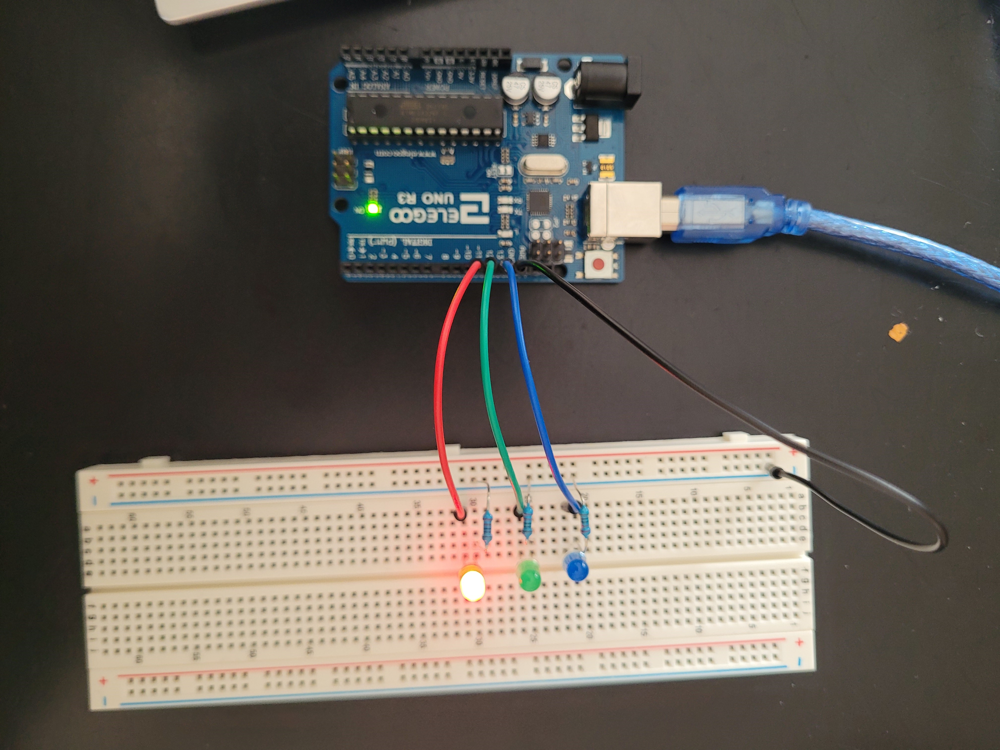
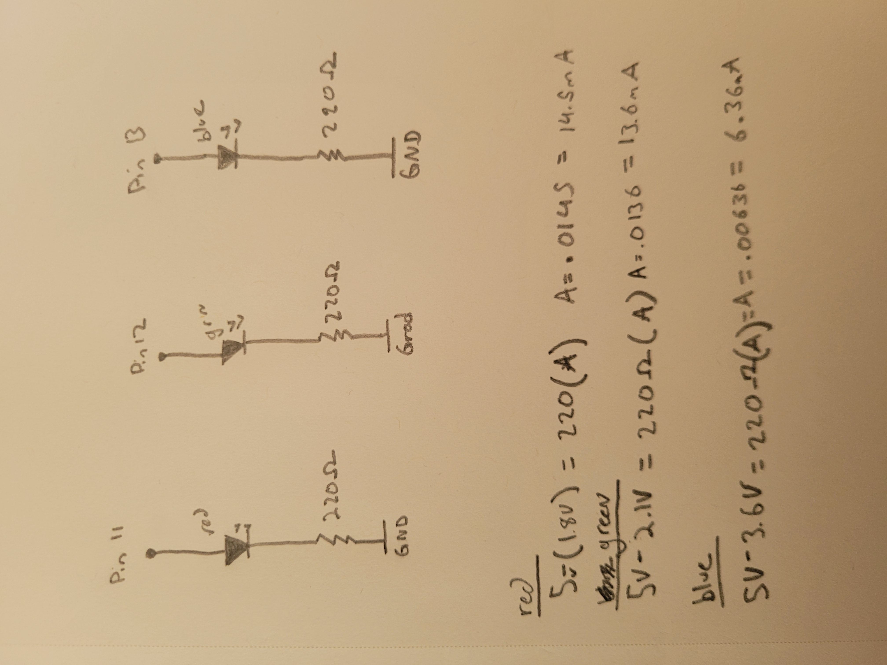

Shivank's Assignment 1!
This assignment is for a simple blink program that blinks through 3 LEDS: one red, one blue, and one green.

Image of the circuit.

GIF of the circuit.

Image of the schematic. I chose 220 Ohm resistors because they allow the Amps to be between 1mA and 30mA.
The calculations for the amperage correspond to the colors because there is a different voltage drop for each of the lights.
The following is the code snippet for the firmware. that allows the LEDs to blink. I have commented out the justification for each of the lines in the code.
// Shivank Mistry
// HCDE 439 HW1: Blink
// This program blinks 3 led lights indefinitely
void setup() {
pinMode(13, OUTPUT); // initializes pin 13 as output
pinMode(12, OUTPUT); // initializes pin 12 as output
pinMode(11, OUTPUT); // initializes pin 11 as output
}
// the loop function runs over and over again forever
void loop() {
for (int i = 11; i < 14; i++) { // setting up the for loop to run between 11-13
digitalWrite(i, HIGH); // turns on the current pin
delay(500); // wait half a second
digitalWrite(i, LOW); // turns off the current pin
delay(500); // wait half a second
}
}